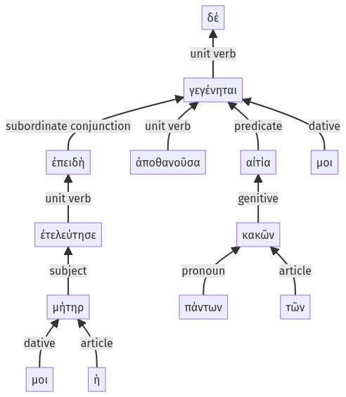

Lysias, Oration 1, 1.7.17-1.7.29a
1.7.6-1.7.16a | 1.8.1-1.8.15a
Sentence 14
1.7.17-1.7.29a
ἐπειδὴ δέ μοι ἡ μήτηρ ἐτελεύτησε, πάντων τῶν κακῶν ἀποθανοῦσα αἰτία μοι γεγένηται.
2 ἐπειδὴ μοι ἡ μήτηρ ἐτελεύτησε
1 πάντων τῶν κακῶν
2 ἀποθανοῦσα
1 αἰτία μοι γεγένηται
ἐπειδὴ δέ μοι ἡ μήτηρ ἐτελεύτησε, πάντων τῶν κακῶν ἀποθανοῦσα αἰτία μοι γεγένηται.
Highlighting:
- connecting words
- unit verb
- subject
- object
Color code:
- independent clause (level 1, linking verb)
- subordinate clause (level 2, linking verb)
- circumstantial participle (level 2, intransitive verb)
